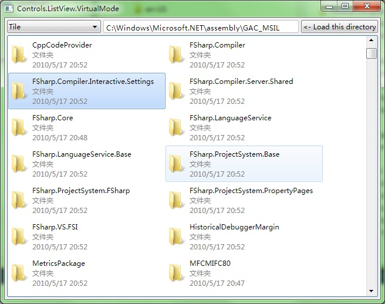

ListView.VirtualMode

#include "..\..\Public\Source\GacUI.h"
#include <ShlObj.h>
using namespace vl::collections;
int CALLBACK WinMain(HINSTANCE hInstance, HINSTANCE hPrevInstance, LPSTR lpCmdLine, int CmdShow)
{
return SetupWindowsDirect2DRenderer();
}
extern WString GetWindowsDirectory();
extern void SearchDirectoriesAndFiles(const WString& path, List<WString>& directories, List<WString>& files);
extern Ptr<GuiImageData> GetFileIcon(const WString& fullPath, UINT uFlags);
extern WString GetFileDisplayName(const WString& fullPath);
extern WString GetFileTypeName(const WString& fullPath);
extern WString GetFileLastWriteTime(const WString& fullPath);
extern WString GetFileSize(const WString& fullPath);
/***********************************************************************
FileProperties
***********************************************************************/
class FileProperties
{
private:
Ptr<GuiImageData> smallIcon;
Ptr<GuiImageData> bigIcon;
WString displayName;
WString typeName;
WString lastWriteTime;
WString size;
WString fullPath;
public:
FileProperties(const WString& _fullPath)
:fullPath(_fullPath)
{
}
Ptr<GuiImageData> GetSmallIcon()
{
if(!smallIcon)
{
smallIcon=GetFileIcon(fullPath, SHGFI_SMALLICON | SHGFI_ICON);
}
return smallIcon;
}
Ptr<GuiImageData> GetBigIcon()
{
if(!bigIcon)
{
bigIcon=GetFileIcon(fullPath, SHGFI_LARGEICON | SHGFI_ICON);
}
return bigIcon;
}
WString GetDisplayName()
{
if(displayName==L"")
{
displayName=GetFileDisplayName(fullPath);
}
return displayName;
}
WString GetTypeName()
{
if(typeName==L"")
{
typeName=GetFileTypeName(fullPath);
}
return typeName;
}
WString GetLastWriteTime()
{
if(lastWriteTime==L"")
{
lastWriteTime=GetFileLastWriteTime(fullPath);
}
return lastWriteTime;
}
WString GetSize()
{
if(size==L"")
{
size=GetFileSize(fullPath);
}
return size;
}
};
/***********************************************************************
DataSource
***********************************************************************/
class DataSource : public list::ItemProviderBase, public list::ListViewItemStyleProvider::IListViewItemView, public list::ListViewColumnItemArranger::IColumnItemView
{
typedef List<list::ListViewColumnItemArranger::IColumnItemViewCallback*> ColumnItemViewCallbackList;
private:
List<Ptr<FileProperties>> fileProperties;
ColumnItemViewCallbackList columnItemViewCallbacks;
int columnSizes[4];
public:
DataSource()
{
for(int i=0;i<4;i++)
{
columnSizes[i]=i==0?230:120;
}
}
void SetDirectory(const WString& directory)
{
int oldCount=fileProperties.Count();
fileProperties.Clear();
// Enumerate all directories and files in the Windows directory.
List<WString> directories;
List<WString> files;
SearchDirectoriesAndFiles(directory, directories, files);
FOREACH(WString, file, directories.Wrap()>>Concat(files.Wrap()))
{
fileProperties.Add(new FileProperties(directory+L"\\"+file));
}
InvokeOnItemModified(0, oldCount, fileProperties.Count());
}
// GuiListControl::IItemProvider
int Count()
{
return fileProperties.Count();
}
IDescriptable* RequestView(const WString& identifier)
{
if(identifier==list::ListViewItemStyleProvider::IListViewItemView::Identifier)
{
return this;
}
else if(identifier==list::ListViewColumnItemArranger::IColumnItemView::Identifier)
{
return this;
}
else
{
return 0;
}
}
void ReleaseView(IDescriptable* view)
{
}
// GuiListControl::IItemPrimaryTextView
WString GetPrimaryTextViewText(int itemIndex)
{
return GetText(itemIndex);
}
bool ContainsPrimaryText(int itemIndex)
{
return true;
}
// list::ListViewItemStyleProvider::IListViewItemView
Ptr<GuiImageData> GetSmallImage(int itemIndex)
{
if(0<=itemIndex && itemIndex<fileProperties.Count())
{
return fileProperties[itemIndex]->GetSmallIcon();
}
return 0;
}
Ptr<GuiImageData> GetLargeImage(int itemIndex)
{
if(0<=itemIndex && itemIndex<fileProperties.Count())
{
return fileProperties[itemIndex]->GetBigIcon();
}
return 0;
}
WString GetText(int itemIndex)
{
if(0<=itemIndex && itemIndex<fileProperties.Count())
{
return fileProperties[itemIndex]->GetDisplayName();
}
return L"";
}
WString GetSubItem(int itemIndex, int index)
{
if(0<=itemIndex && itemIndex<fileProperties.Count() && 0<=index && index<3)
{
switch(index)
{
case 0:
return fileProperties[itemIndex]->GetTypeName();
case 1:
return fileProperties[itemIndex]->GetLastWriteTime();
case 2:
return fileProperties[itemIndex]->GetSize();
}
}
return L"";
}
int GetDataColumnCount()
{
return 2;
}
int GetDataColumn(int index)
{
return index;
}
// list::ListViewColumnItemArranger::IColumnItemView
bool AttachCallback(list::ListViewColumnItemArranger::IColumnItemViewCallback* value)
{
if(columnItemViewCallbacks.Contains(value))
{
return false;
}
else
{
columnItemViewCallbacks.Add(value);
return true;
}
}
bool DetachCallback(list::ListViewColumnItemArranger::IColumnItemViewCallback* value)
{
int index=columnItemViewCallbacks.IndexOf(value);
if(index==-1)
{
return false;
}
else
{
columnItemViewCallbacks.Remove(value);
return true;
}
}
int GetColumnCount()
{
return 4;
}
WString GetColumnText(int index)
{
switch(index)
{
case 0:
return L"Name";
case 1:
return L"Type";
case 2:
return L"Date";
case 3:
return L"Size";
default:
return L"";
}
}
int GetColumnSize(int index)
{
if(0<=index && index<4)
{
return columnSizes[index];
}
else
{
return -1;
}
}
void SetColumnSize(int index, int value)
{
if(0<=index && index<4)
{
columnSizes[index]=value;
for(int i=0;i<columnItemViewCallbacks.Count();i++)
{
columnItemViewCallbacks[i]->OnColumnSizeChanged(index);
}
}
}
};
/***********************************************************************
VirtualModeWindow
***********************************************************************/
class VirtualModeWindow : public GuiWindow
{
private:
DataSource* dataSource;
GuiVirtualListView* listView;
GuiComboBoxListControl* comboView;
GuiSinglelineTextBox* textDirectory;
GuiButton* buttonRefresh;
void comboView_SelectedIndexChanged(GuiGraphicsComposition* sender, GuiEventArgs& arguments)
{
switch(comboView->GetSelectedIndex())
{
case 0:
listView->ChangeItemStyle(new list::ListViewBigIconContentProvider);
break;
case 1:
listView->ChangeItemStyle(new list::ListViewSmallIconContentProvider);
break;
case 2:
listView->ChangeItemStyle(new list::ListViewListContentProvider);
break;
case 3:
listView->ChangeItemStyle(new list::ListViewDetailContentProvider);
break;
case 4:
listView->ChangeItemStyle(new list::ListViewTileContentProvider);
break;
case 5:
listView->ChangeItemStyle(new list::ListViewInformationContentProvider);
break;
}
}
void buttonRefresh_Clicked(GuiGraphicsComposition* sender, GuiEventArgs& arguments)
{
WString directory=textDirectory->GetText();
if(directory.Length()>0 && directory[directory.Length()-1]==L'\\')
{
directory=directory.Left(directory.Length()-1);
}
dataSource->SetDirectory(directory);
}
public:
VirtualModeWindow()
:GuiWindow(GetCurrentTheme()->CreateWindowStyle())
{
this->SetText(L"Controls.ListView.VirtualMode");
GuiTableComposition* table=new GuiTableComposition;
table->SetCellPadding(4);
table->SetAlignmentToParent(Margin(0, 0, 0, 0));
table->SetRowsAndColumns(2, 3);
table->SetRowOption(0, GuiCellOption::MinSizeOption());
table->SetRowOption(1, GuiCellOption::PercentageOption(1.0));
table->SetColumnOption(0, GuiCellOption::MinSizeOption());
table->SetColumnOption(1, GuiCellOption::PercentageOption(1.0));
table->SetColumnOption(2, GuiCellOption::MinSizeOption());
{
GuiCellComposition* cell=new GuiCellComposition;
table->AddChild(cell);
cell->SetSite(0, 0, 1, 1);
GuiTextList* comboSource=g::NewTextList();
comboSource->GetItems().Add(L"Big Icon");
comboSource->GetItems().Add(L"Small Icon");
comboSource->GetItems().Add(L"List");
comboSource->GetItems().Add(L"Detail");
comboSource->GetItems().Add(L"Tile");
comboSource->GetItems().Add(L"Information");
comboSource->SetHorizontalAlwaysVisible(false);
comboView=g::NewComboBox(comboSource);
comboView->SetSelectedIndex(0);
comboView->GetBoundsComposition()->SetAlignmentToParent(Margin(0, 0, -1, 0));
comboView->GetBoundsComposition()->SetPreferredMinSize(Size(160, 0));
comboView->SelectedIndexChanged.AttachMethod(this, &VirtualModeWindow::comboView_SelectedIndexChanged);
cell->AddChild(comboView->GetBoundsComposition());
}
{
GuiCellComposition* cell=new GuiCellComposition;
table->AddChild(cell);
cell->SetSite(0, 1, 1, 1);
textDirectory=g::NewTextBox();
textDirectory->GetBoundsComposition()->SetAlignmentToParent(Margin(0, 0, 0, 0));
cell->AddChild(textDirectory->GetBoundsComposition());
}
{
GuiCellComposition* cell=new GuiCellComposition;
table->AddChild(cell);
cell->SetSite(0, 2, 1, 1);
buttonRefresh=g::NewButton();
buttonRefresh->SetText(L"<- Load this directory");
buttonRefresh->GetBoundsComposition()->SetAlignmentToParent(Margin(0, 0, 0, 0));
buttonRefresh->Clicked.AttachMethod(this, &VirtualModeWindow::buttonRefresh_Clicked);
cell->AddChild(buttonRefresh->GetBoundsComposition());
}
{
GuiCellComposition* cell=new GuiCellComposition;
table->AddChild(cell);
cell->SetSite(1, 0, 1, 3);
dataSource=new DataSource;
listView=new GuiVirtualListView(GetCurrentTheme()->CreateListViewStyle(), dataSource);
listView->GetBoundsComposition()->SetAlignmentToParent(Margin(0, 0, 0, 0));
listView->SetHorizontalAlwaysVisible(false);
listView->SetVerticalAlwaysVisible(false);
listView->SetMultiSelect(true);
cell->AddChild(listView->GetBoundsComposition());
}
this->GetBoundsComposition()->AddChild(table);
textDirectory->SetText(GetWindowsDirectory());
dataSource->SetDirectory(textDirectory->GetText());
// set the preferred minimum client size
this->GetBoundsComposition()->SetPreferredMinSize(Size(640, 480));
// call this to calculate the size immediately if any indirect content in the table changes
// so that the window can calcaulte its correct size before calling the MoveToScreenCenter()
this->ForceCalculateSizeImmediately();
// move to the screen center
this->MoveToScreenCenter();
}
};
/***********************************************************************
File System Operations
***********************************************************************/
WString GetWindowsDirectory()
{
wchar_t folderPath[MAX_PATH]={0};
HRESULT hr=SHGetFolderPath(NULL, CSIDL_WINDOWS, NULL, 0, folderPath);
if(FAILED(hr)) return L"";
return folderPath;
}
void SearchDirectoriesAndFiles(const WString& path, List<WString>& directories, List<WString>& files)
{
// Use FindFirstFile, FindNextFile and FindClose to enumerate all directories and files
WIN32_FIND_DATA findData;
HANDLE findHandle=INVALID_HANDLE_VALUE;
while(true)
{
if(findHandle==INVALID_HANDLE_VALUE)
{
WString searchPath=path+L"\\*";
findHandle=FindFirstFile(searchPath.Buffer(), &findData);
if(findHandle==INVALID_HANDLE_VALUE)
{
break;
}
}
else
{
BOOL result=FindNextFile(findHandle, &findData);
if(result==0)
{
FindClose(findHandle);
break;
}
}
if(findData.dwFileAttributes & FILE_ATTRIBUTE_DIRECTORY)
{
if(wcscmp(findData.cFileName, L".")!=0 && wcscmp(findData.cFileName, L"..")!=0)
{
directories.Add(findData.cFileName);
}
}
else
{
files.Add(findData.cFileName);
}
}
Func<vint(WString a, WString b)> comparer=[](WString a, WString b){return _wcsicmp(a.Buffer(), b.Buffer());};
CopyFrom(directories.Wrap(), directories.Wrap()>>OrderBy(comparer));
CopyFrom(files.Wrap(), files.Wrap()>>OrderBy(comparer));
}
Ptr<GuiImageData> GetFileIcon(const WString& fullPath, UINT uFlags)
{
// Use SHGetFileInfo to get the correct icons for the specified directory or file.
SHFILEINFO info;
DWORD result=SHGetFileInfo(fullPath.Buffer(), 0, &info, sizeof(SHFILEINFO), uFlags);
Ptr<GuiImageData> imageData;
if(result)
{
Ptr<INativeImage> image=windows::CreateImageFromHICON(info.hIcon);
if(image)
{
imageData=new GuiImageData(image, 0);
}
DestroyIcon(info.hIcon);
}
return imageData;
}
WString GetFileDisplayName(const WString& fullPath)
{
SHFILEINFO info;
DWORD result=SHGetFileInfo(fullPath.Buffer(), 0, &info, sizeof(SHFILEINFO), SHGFI_DISPLAYNAME);
return result?info.szDisplayName:L"";
}
WString GetFileTypeName(const WString& fullPath)
{
SHFILEINFO info;
DWORD result=SHGetFileInfo(fullPath.Buffer(), 0, &info, sizeof(SHFILEINFO), SHGFI_TYPENAME);
return result?info.szTypeName:L"";
}
WString GetFileLastWriteTime(const WString& fullPath)
{
// Get file attributes.
WIN32_FILE_ATTRIBUTE_DATA info;
BOOL result=GetFileAttributesEx(fullPath.Buffer(), GetFileExInfoStandard, &info);
// Get the localized string for the file last write date.
FILETIME localFileTime;
SYSTEMTIME localSystemTime;
FileTimeToLocalFileTime(&info.ftLastWriteTime, &localFileTime);
FileTimeToSystemTime(&localFileTime, &localSystemTime);
// Get the correct locale
wchar_t localeName[LOCALE_NAME_MAX_LENGTH]={0};
GetSystemDefaultLocaleName(localeName, sizeof(localeName)/sizeof(*localeName));
// Get the localized date string
wchar_t dateString[100]={0};
GetDateFormatEx(localeName, DATE_SHORTDATE, &localSystemTime, NULL, dateString, sizeof(dateString)/sizeof(*dateString), NULL);
// Get the localized time string
wchar_t timeString[100]={0};
GetTimeFormatEx(localeName, TIME_FORCE24HOURFORMAT | TIME_NOSECONDS, &localSystemTime, NULL, timeString, sizeof(timeString)/sizeof(*timeString));
return dateString+WString(L" ")+timeString;
}
WString GetFileSize(const WString& fullPath)
{
// Get file attributes.
WIN32_FILE_ATTRIBUTE_DATA info;
BOOL result=GetFileAttributesEx(fullPath.Buffer(), GetFileExInfoStandard, &info);
// Get the string for file size
LARGE_INTEGER li;
li.HighPart=info.nFileSizeHigh;
li.LowPart=info.nFileSizeLow;
WString unit;
double size=0;
if(li.QuadPart>=1024*1024*1024)
{
unit=L" GB";
size=(double)li.QuadPart/(1024*1024*1024);
}
else if(li.QuadPart>=1024*1024)
{
unit=L" MB";
size=(double)li.QuadPart/(1024*1024);
}
else if(li.QuadPart>=1024)
{
unit=L" KB";
size=(double)li.QuadPart/1024;
}
else
{
unit=L" Bytes";
size=(double)li.QuadPart;
}
WString sizeString=ftow(size);
const wchar_t* reading=sizeString.Buffer();
const wchar_t* point=wcschr(sizeString.Buffer(), L'.');
if(point)
{
const wchar_t* max=reading+sizeString.Length();
point+=4;
if(point>max) point=max;
sizeString=sizeString.Left(point-reading);
}
return sizeString+unit;
}
/***********************************************************************
GuiMain
***********************************************************************/
void GuiMain()
{
GuiWindow* window=new VirtualModeWindow;
GetApplication()->Run(window);
delete window;
}
|